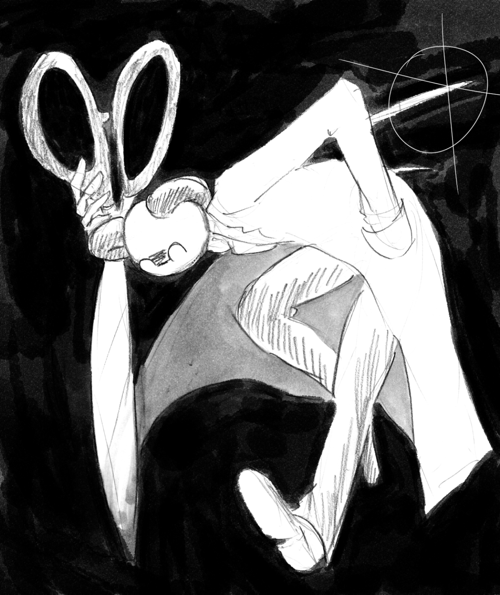

Portfolio/外枠
about
アイコン
| name |
: |
松村 楓 |
| birth |
: |
1998/06/19 |
| mail |
: |
g312002554🐟edu.teu.ac.jp |
チームで制作したゲームを東京ゲームショウ2019に出展しました。
研究ではVR上で触れ合える箸型触覚デバイスを制作しています。
趣味でゲームをしたり映画を見たり絵を描いたりしています。
Twitte
r@sotowakuta
skilset
| Game Engine |
: |
Unity /Unreal Engine4 |
| Programming |
: |
Unity(C#) /Arduino /Processing /HTML /CSS /openFrameworks(C++) |
| 3DCG |
: |
Maya /Blender /Substance Painter / |
| 2DCG |
: |
Clip Studio Paint /Adobe Photoshop /Adobe Illustrator /Live 2D |
| video |
: |
Aviutl /Adobe After Effects /Adobe Premiere Pro |
Works/制作物
Electronics/電子工作
アルプス一万尺用手袋
使用ツール : Arduino
授業で制作しました。手袋からアルプス一万尺の音楽が流れるので、リズム通りにアルプス一万尺の手遊びをすると手の甲のLEDが青く光り、失敗すると赤く光るというデバイスです。
箸デバイス
使用ツール : Arduino /Unity /Oculus Quest2
卒業研究で制作しました。まだ改良中です。VR上のキャラクターに食べ物を食べさせることが最終目標です。
Games/ゲーム
Anivuma/グラフィック全般担当

使用ツール : Unity /Maya /Clip Studio Paint
チーム制作でグラフィック全般の担当として参加しました。
全体イメージデザイン、キャラクターデザイン、UIデザイン、背景デザイン、UIスプライト、キャラクターモデリング、背景モデリング、キャラクターアニメーション、エフェクト、Webサイト制作、チームロゴ制作などを行いました。
ゲームデザイナーやチームメンバーと協力して、かわいい世界観とキャラクターを作り出すことができました。
ぐるりんと不思議な箱/2Dスプライト担当
使用ツール : Unity /Clip Studio Paint
チーム制作でグラフィックの担当として参加しました。
ゲームデザイナーの指示の下、背景デザインなどを行いました。
統一した世界観でわかりやすいギミックのグラフィックデザインが出来たと思います。
学生対抗30時間ゲームジャム/グラフィック全般担当

使用ツール : Unity /Maya /Clip Studio Paint
30時間でゲームを作る企画のチーム制作でグラフィックの担当として参加しました。
全体のグラフィックデザインと3Dモデリング、エンディング用イラストを担当しました。
1週間ゲームジャム/2Dスプライト担当

使用ツール : Unity /Clip Studio Paint
1週間でゲームを作る企画のチーム制作でグラフィックの担当として参加しました。
カードのイラストとUIデザインをしました。
グローバルゲームジャム/グラフィック全般担当

使用ツール : Unity /Maya /Clip Studio Paint
48時間でゲームを作る企画でグラフィック全般を担当しました。
ゲーム全体のデザインと3Dキャラクターモデリング、背景モデリングをしました。
ジャンプしてよけるゲーム/個人制作
使用ツール : Unity /Clip Studio Paint
息抜きに作り始めたものでした。背景の無限スクロールや敵のランダム湧き、キャラクターの2Dアニメーションなどを頑張りました。
着せ替えゲーム/個人制作

使用ツール : Unity /Clip Studio Paint
衣装追加システムとレイヤーの設計を頑張りました。
同じ規格で沢山のイラストを描きました。
使用ツール : Processing /Unity /Clip Studio Paint
上のゲームの元にしたプログラムで、最初にProcessingで作ったものをUnityに移植しました。
仕様が違い大変でしたが、同じ動作を実現することができました。
3DCGs/モデリング
Secret Chase/背景3Dモデリング担当

使用ツール : Unreal Engine4 /Substance Painter
チーム制作でレースゲームを作りました。
背景の家などをモデリングしました。
実在のドイツの町並みを参考にしながら、数種類の家をモデリングしレースのコースになるように配置しました。
MMD
使用ツール : Miku Miku Dance /Maya /Blender /Clip Studio Paint
ドラマに出てきた実写キャラクターをデフォルメし、モデリングして踊れるようにしました。
MMDでは初期のシェーダーで影が入らないので、初期シェーダーでも見栄えがするように影のベイクをしました。
3Dアバター

使用ツール : Unity /Maya /Clip Studio Paint
オリジナルキャラクターをVRChat用にモデリングしました。
初めてのアバターでしたがVR空間内で動かすことができました。
Illustration/イラスト
使用ツール : Clip Studio Paint 制作時間 : 時間
ポストカードのデザインのつもりで制作しました。人物がかっこよく見えることと文字がおしゃれな感じに配置できることを意識しました。

使用ツール : Clip Studio Paint 制作時間 : 時間
TRPGで使用したプレイヤーの立ち絵です。それぞれキャラクターに合った表情差分を付けています。
衣装差分も描きました。
Live2D

使用ツール : Clip Studio Paint /Live2D 制作時間 : 5時間
TRPGのキャラクターをLive2Dで動かしました。絵は描き直しました。同じキャラに見えるように絵を再現するところは頑張りました。